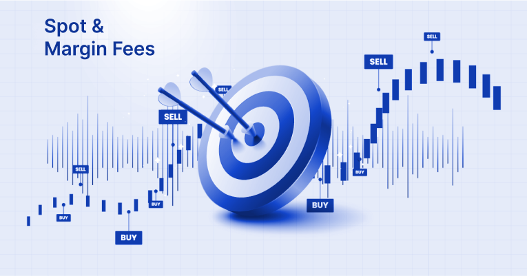

About us
Today we’ll talk about commissions.
Every time a customer makes a transaction (buying/selling cryptocurrency). They are charged a commission depending on the turnover for the month. Its diversification depends on the type of order placement on the exchange:
- MAKER: commission for setting a new buy/sell offer to the offer table;
- TAKER: comission for fulfilling an existing offer from another user.
Maker and Taker fees on Monowork.com are the same: 0.20% for regular users and 0.14% for Premium users.
There is a Commission for withdrawal, as well as a minimum amount of withdrawal of tokens/coins. The maximum amount cannot exceed the amount that is available on your account.
This data may change without notifying users, so pay attention to the automatic calculation of the Commission when withdrawing. Also, for the safety of your funds, we strongly recommend that you pass KYC verification, which will allow us to better protect you from adverse situations.
Read more about protecting your account, funds, and personal data in our Anti-Fraud Guide.